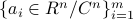
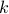

Sparse Phase Retrieval via Truncated Amplitude Flow
Given observed data and feature vectors , our goal is to solve for a -sparse With sample complexity and computational complexity |
 .
. , our SPARTA provably recovers the true solution exactly.
, our SPARTA provably recovers the true solution exactly.Sparse Phase Retrieval via Truncated Amplitude Flow.
Authors: G. Wang, L. Zhang, G. B. Giannakis, M. Akcakaya, and J. Chen
This paper develops a novel algorithm, termed emph{SPARse Truncated Amplitude flow} (SPARTA), to reconstruct a sparse signal from a small number of magnitude-only measurements. It deals with what is also known as sparse phase retrieval (PR), which is emph{NP-hard} in general and emerges in many science and engineering applications. Upon formulating sparse PR as an amplitude-based nonconvex optimization task, SPARTA works iteratively in two stages: In stage one, the support of the underlying sparse signal is recovered using an analytically well-justified rule, and subsequently a sparse orthogonality-promoting initialization is obtained via power iterations restricted on the support; and, in stage two, the initialization is successively refined by means of hard thresholding based truncated gradient iterations. SPARTA is a simple yet effective, scalable, and fast sparse PR solver. On the theoretical side, for any  -dimensional -sparse () signal
-dimensional -sparse () signal  with minimum (in modulus) nonzero entries on the order of
with minimum (in modulus) nonzero entries on the order of  , SPARTA recovers the signal exactly (up to a global unimodular constant) from about random Gaussian measurements with high probability. Furthermore, SPARTA incurs computational complexity on the order of with total runtime proportional to the time required to read the data, which improves upon the state-of-the-art by at least a factor of . Finally, SPARTA is robust against additive noise of bounded support. Extensive numerical tests corroborate markedly improved recovery performance and speedups of SPARTA relative to existing alternatives.
, SPARTA recovers the signal exactly (up to a global unimodular constant) from about random Gaussian measurements with high probability. Furthermore, SPARTA incurs computational complexity on the order of with total runtime proportional to the time required to read the data, which improves upon the state-of-the-art by at least a factor of . Finally, SPARTA is robust against additive noise of bounded support. Extensive numerical tests corroborate markedly improved recovery performance and speedups of SPARTA relative to existing alternatives.